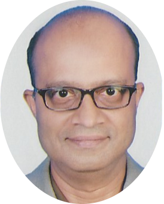

|  |
Srinath Subrahmanyan(Under Construction, so a work in progress)Global Product Leader, passionate about people, products and modern engineering |
Srinath is a seasoned Product and Technology leader with over 25 years of experience in the product engineering space. Starting his professional life as a software engineer for building automated railroad traffic control systems, he has grown across several roles in the product ecosystem: from engineering to product management; technical support to professional services; from running customer beta programs to M&A and finally from management to leadership, at the site and product line levels.
| Dates | Role |
|---|---|
| 2018-2020 | Vice President, Cognizant Digital Engineering |
| 2015-2018 | India Leader, Accenture Products and Platforms |
| 2014-2015 | Global Engineering Lead, Accenture Freight and Logistics Prodcutline |
|
|